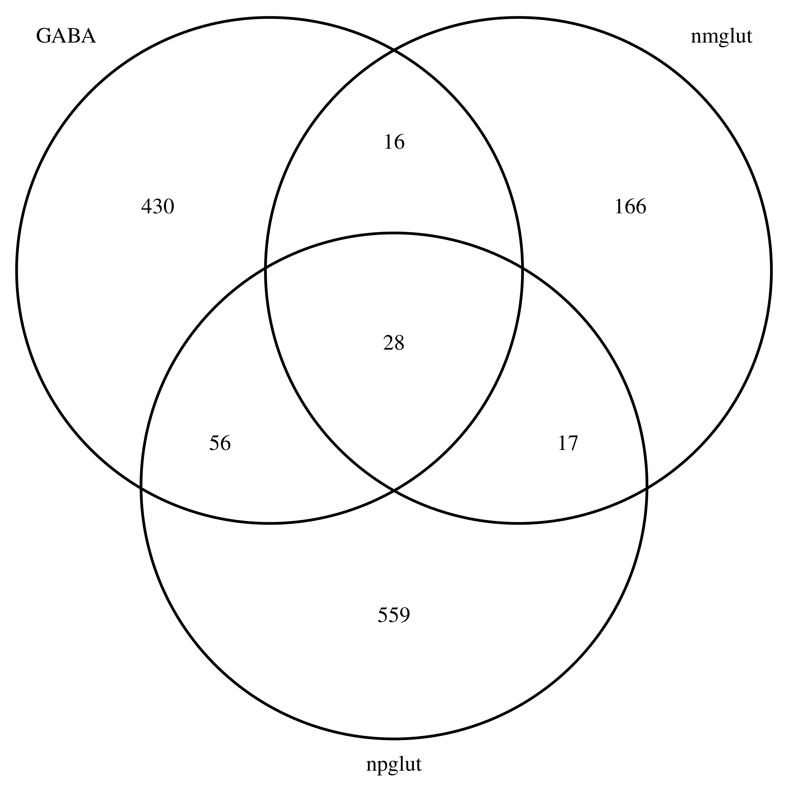
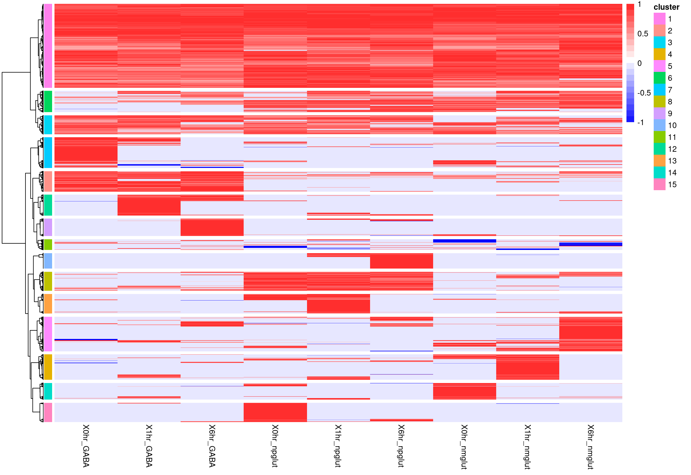

Last updated: 2024-07-10
Checks: 6 1
Knit directory: neuron_stim_eQTL100/
This reproducible R Markdown analysis was created with workflowr (version 1.7.0). The Checks tab describes the reproducibility checks that were applied when the results were created. The Past versions tab lists the development history.
The R Markdown file has unstaged changes. To know which version of
the R Markdown file created these results, you’ll want to first commit
it to the Git repo. If you’re still working on the analysis, you can
ignore this warning. When you’re finished, you can run
wflow_publish to commit the R Markdown file and build the
HTML.
Great job! The global environment was empty. Objects defined in the global environment can affect the analysis in your R Markdown file in unknown ways. For reproduciblity it’s best to always run the code in an empty environment.
The command set.seed(20231109) was run prior to running
the code in the R Markdown file. Setting a seed ensures that any results
that rely on randomness, e.g. subsampling or permutations, are
reproducible.
Great job! Recording the operating system, R version, and package versions is critical for reproducibility.
Nice! There were no cached chunks for this analysis, so you can be confident that you successfully produced the results during this run.
Great job! Using relative paths to the files within your workflowr project makes it easier to run your code on other machines.
Great! You are using Git for version control. Tracking code development and connecting the code version to the results is critical for reproducibility.
The results in this page were generated with repository version bd24196. See the Past versions tab to see a history of the changes made to the R Markdown and HTML files.
Note that you need to be careful to ensure that all relevant files for
the analysis have been committed to Git prior to generating the results
(you can use wflow_publish or
wflow_git_commit). workflowr only checks the R Markdown
file, but you know if there are other scripts or data files that it
depends on. Below is the status of the Git repository when the results
were generated:
Ignored files:
Ignored: .DS_Store
Ignored: .RData
Ignored: .Rhistory
Ignored: data/.DS_Store
Ignored: data/single_group_ctwas/.DS_Store
Untracked files:
Untracked: data/ISLRv2_corrected_June_2023.pdf
Unstaged changes:
Modified: analysis/eqtl_cluster.Rmd
Modified: data/dynami_beta_cluster.RDS
Modified: data/dynamic_beta_cluster_enrichment_GO.RDS
Note that any generated files, e.g. HTML, png, CSS, etc., are not included in this status report because it is ok for generated content to have uncommitted changes.
These are the previous versions of the repository in which changes were
made to the R Markdown (analysis/eqtl_cluster.Rmd) and HTML
(docs/eqtl_cluster.html) files. If you’ve configured a
remote Git repository (see ?wflow_git_remote), click on the
hyperlinks in the table below to view the files as they were in that
past version.
| File | Version | Author | Date | Message |
|---|---|---|---|---|
| html | bd24196 | Lifan Liang | 2024-07-02 | Build site. |
| Rmd | 9ef346f | Lifan Liang | 2024-07-02 | wflow_publish(c("analysis", "docs")) |
| html | 9ef346f | Lifan Liang | 2024-07-02 | wflow_publish(c("analysis", "docs")) |
| html | d87a474 | Lifan Liang | 2024-06-27 | Build site. |
| Rmd | f7d6213 | Lifan Liang | 2024-06-27 | wflow_publish(c("analysis", "docs", "data")) |
| html | f7d6213 | Lifan Liang | 2024-06-27 | wflow_publish(c("analysis", "docs", "data")) |
This section describes the procedure to collect the set of dynamic eQTL and cluster them to identify patterns of dynamic genetic effects related stimulation response.
The candidate gene-SNP pairs for testing come from the union of top eQTLs from fixed effect eQTL mapping for each condition. The union of top eQTLs were further LD pruned. For each gene, pairwise \(R^2\) among the set of top eQTLs (9 at maximum) based on the 100 cell lines were computed. When \(R^2\) is above 0.1, the SNP with higher nominal P values in main effect eQTLs were removed.
It results in 15247 gene-SNP pairs with 9880 unique genes.
We used CellRegMap to test six different hypothesis with the candidate set. The first three utilized samples across 9 conditions altogether, while hypothesis 4-6 were tested with 3 conditions respectively. The major difference among these hypothesis is the design matrix for the random slope.
After obtaining nominal P values from CellRegMap, we used Storey’s Q value for FDR correction across the cadidates, ignoring weak LD within genes. Q value < 0.05 is the significant threshold.
condition cell_type time_point GABA NPglut NMglut
2434 2082 822 530 660 227 The Venn diagram for eQTLs discovered from hypothesis 4-6 suggest higher cell type specificity than previous results in fixed effect interaction. It could be due to the LD pruning for the current results.

We used the union of significant gene-SNP pairs described above for hierarchical clustering.There are 3928 pairs in total. Due to the residual correlation caused by repeated measurement / individual random effects, we used effect size and standard error from the interaction only mixed linear model described in MASH analysis. Z scores are consistent with condition by condition (CxC) eQTL in general.
The positive effect direction is the most common direction for the gene-SNP pairs across 9 conditions. Effect size would be set to zero if the absolute Z score is less than 2. The whole gene-SNP pair was removed if the maximum absolute Z score across 9 conditions is less than 1. After filtering, there are 3452 gene-SNP pairs for clustering. Dynamic eQTL patterns are quite clear for any one time point.

Enrichment analysis with 2023 GO biological process. Each row is the top enrichment term corresponding to each cluster.
sessionInfo()R version 4.1.2 (2021-11-01)
Platform: x86_64-apple-darwin17.0 (64-bit)
Running under: macOS Big Sur 10.16
Matrix products: default
BLAS: /Library/Frameworks/R.framework/Versions/4.1/Resources/lib/libRblas.0.dylib
LAPACK: /Library/Frameworks/R.framework/Versions/4.1/Resources/lib/libRlapack.dylib
locale:
[1] en_US.UTF-8/en_US.UTF-8/en_US.UTF-8/C/en_US.UTF-8/en_US.UTF-8
attached base packages:
[1] stats graphics grDevices utils datasets methods base
other attached packages:
[1] workflowr_1.7.0
loaded via a namespace (and not attached):
[1] Rcpp_1.0.11 bslib_0.3.1 compiler_4.1.2 pillar_1.7.0
[5] later_1.3.0 git2r_0.29.0 jquerylib_0.1.4 tools_4.1.2
[9] getPass_0.2-2 digest_0.6.29 jsonlite_1.7.3 evaluate_0.14
[13] tibble_3.1.6 lifecycle_1.0.1 pkgconfig_2.0.3 rlang_1.0.0
[17] cli_3.1.1 rstudioapi_0.13 crosstalk_1.2.0 yaml_2.2.2
[21] xfun_0.29 fastmap_1.1.0 httr_1.4.2 stringr_1.4.0
[25] knitr_1.37 htmlwidgets_1.5.4 sass_0.4.1 fs_1.5.2
[29] vctrs_0.3.8 DT_0.26 rprojroot_2.0.2 glue_1.6.1
[33] R6_2.5.1 processx_3.5.2 fansi_1.0.2 rmarkdown_2.11
[37] callr_3.7.0 magrittr_2.0.2 whisker_0.4 ps_1.6.0
[41] promises_1.2.0.1 htmltools_0.5.2 ellipsis_0.3.2 httpuv_1.6.5
[45] utf8_1.2.2 stringi_1.7.6 crayon_1.4.2